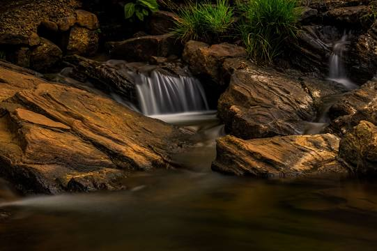
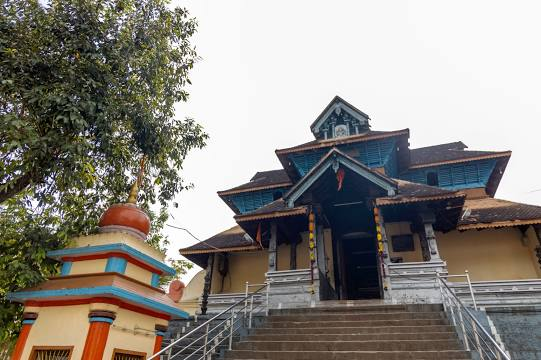
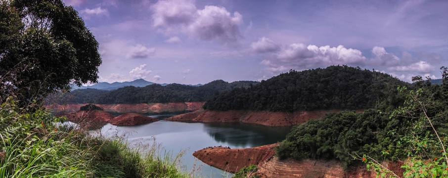

Periyar National Park

Periyar National Park and Wildlife Sanctuary is a protected area located in the districts of Idukki and Pathanamthitta in Kerala, India. It is notable as an elephant reserve and a tiger reserve. The protected area encompasses 925 km², of which 305 km² of the core zone was declared as the Periyar National Park in 1982.
Perunthenaruvi Waterfalls
Perunthenaruvi Waterfalls are waterfalls 36 km from Pathanamthitta, Central Travancore region, Kerala State, India. It is a popular tourist destination situated in Vechoochira Panchayat of Ranni taluk. The one shore of this waterfall is Kudamurutty and Vechoochira is the other. The main route to this waterfall starts from Ranni - Athikkayam - Kudamurutty - Perunthenaruvi.
Aranmula Parthasarathy Temple
The Aranmula Parthasarathy Temple is one of the "Divya Desams", the 108 temples of Vishnu revered by the 12 poet saints, or Alwars located near Aranmula, a village in Pathanamthitta District, Kerala, South India.
Kakki Dam
Kakki Dam is a dam built on the Kaki River, a tributary of the Pampa River in the Ranni Forest in the Seethathodu Grama Panchayat, Pathanamthitta District, Kerala. The dam is located in a forested area adjacent to the Periyar National Park. It was built in 1966 as part of the Sabarigiri Hydroelectric Project.